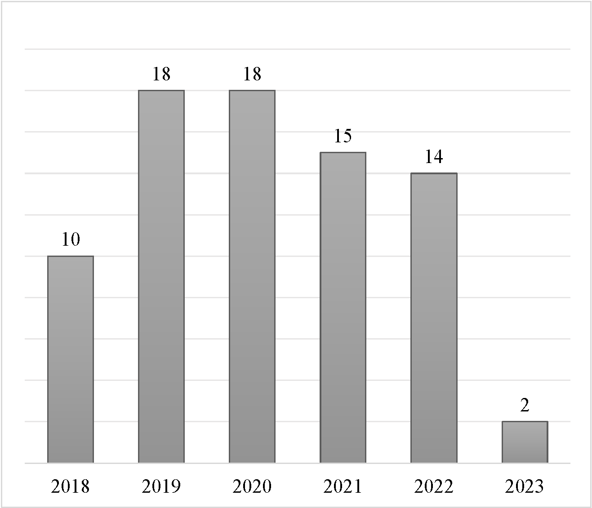

Literature Collection
This page describe the literature collection process.
| Venue | Search Constraints with Publication Source / Site |
|---|---|
| ACL | source: "Association for Computational Linguistics" + source: "ACL" |
| CL | source: "Computational Linguistics" + source: "CL" |
| COLT | source: "International Conference on Learning Theory" + source: "COLT&" |
| ICLR | source: "International Conference on Learning Representations" + source: "ICLR" |
| ICML | source: "International Conference on Machine Learning" + source: "ICML" |
| NDSS | source: "Network and Distributed System Security" + source: "NDSS" |
| Artificial Intelligence | source: "Artificial Intelligence" |
| Neural Networks | source: "Neural Networks" |
| Pattern Recognition | source: "Pattern Recognition" |
| Knowledge Based System | source: "Knowledge Based System" |
| JISA | source: "Journal of Information and Security Applications" |
| AAAI | site:aaai.org |
| IJCAI | site:ijcai.org |
| JMLR | site:jmlr.org |
| NeurIPS | site:proceedings.neurips.cc |
| USENIX | site:usenix.org |
| ArXiv | site:arxiv.org |
Following the exclusion of non-main track and duplicate papers, we manually filtered approximately 4,000 papers. We collaboratively drafted selection criteria using a 40-paper random sample, refining it through cross-validation with another 40 papers. After ensuring unified exclusion standards, papers were distributed among all authors for independent filtering. We identified 277 related papers and validated inclusion through paired discussions and collective discussions for uncertain cases, resulting in 71 relevant papers. Backward snowballing added six more, totaling 77 relevant papers. More detailed distribution of the papers across different publications are included in Table 1 and Figure 4 in the Methodology section of the survey. Figures below show the distribution of the relevant papers by their publication venues (left) and years (right).

The left figure shows that the majority of the papers (64, 83%) are published in Machine Learning venues.
In fact, only the Advances in Neural Information Processing Systems (NeurIPS) conference published 25 (around 32%)
of all papers.
Eleven papers are from the Computer Vision venues and only two are from the Security venues.
We found no relevant papers in the Computational Linguistics venues.
The right figure suggests that mainstream research communities started to investigate the impact of training data on adversarial robustness as recently as 2018. We did not find many relevant papers from 2023 as our search was conducted in early May 2023.